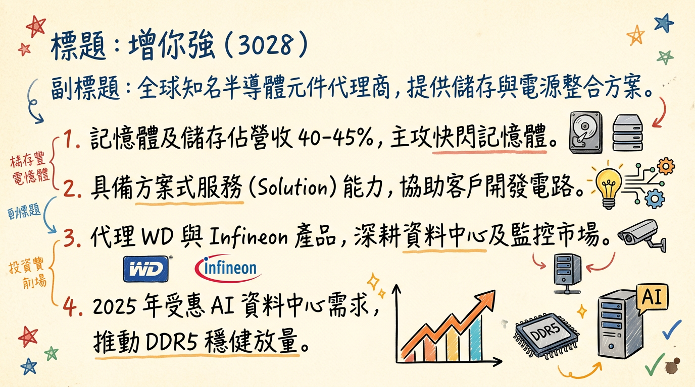
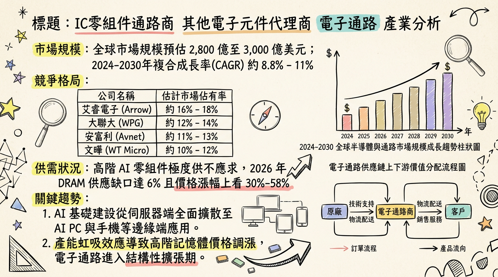
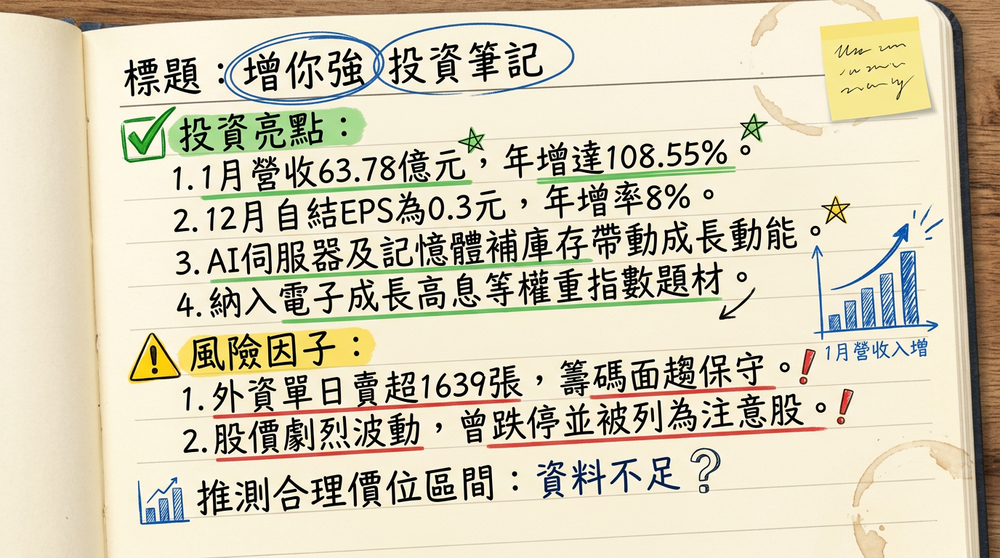

3028 增你強 深度研究報告
日期：2026年03月01日
分析師：頂尖台股研究團隊
## 一句話摘要
增你強（3028）憑藉 AI 伺服器高壓電源方案 與 記憶體價格上升週期 雙重紅利，2026 年 1 月營收創下歷史新高（YoY +108%），正式進入獲利爆發期。
## 公司概覽
增你強（Zenitron）為台灣資深電子通路商，定位為「方案式服務提供者（Solution Provider）」。與傳統通路商不同，其擁有強大的電路設計團隊，協助客戶（原廠）進行技術導入。
營收結構（2025 年法說會預估）
| 業務類別 | 營收佔比 | 核心代理品牌 / 應用 |
|---|
| 記憶體與儲存 (Memory) | 40% - 45% | Western Digital / SanDisk (NAND Flash, DDR4/5) |
| 電源與類比元件 (Power) | 20% - 25% | Infineon, Renesas (AI 伺服器電源、高壓 MOSFET) |
| 工業、車用及通訊 | 20% | 800V 電動車平台、網通設備 |
| 消費性電子及其他 | 10% - 15% | MCU、感測器、被動元件 |
## 核心競爭優勢
高階代理權穩固：身為 Western Digital (WD) 亞太區主要代理商，直接受惠於 AI 伺服器引發的儲存需求及記憶體漲價。
技術導向轉型：不僅是代理，更切入「AI 伺服器電源整櫃系統整合」，提供 HVDC 800V 高壓架構方案。
區域佈局紅利：成功打入中國「國產替代」供應鏈，並透過菲律賓新廠因應「China + 1」全球供應鏈調整。
## 財務分析
月營收趨勢表格（近 6 個月）
| 月份 | 營收金額 (億新台幣) | 月增率 MoM | 年增率 YoY | 備註 |
|---|
| 2026/01 | 63.78 | +79.22% | +108.55% | 創下單月歷史新高 |
| 2025/12 | 35.59 | -2.87% | +25.31% | 2025 年底拉貨穩健 |
| 2025/11 | 36.64 | -6.43% | +23.68% | 營收動能轉強 |
| 2025/10 | 39.16 | -4.09% | +36.59% | AI 需求開始顯現 |
| 2025/09 | 40.83 | +13.97% | +23.06% | 第三季末旺季效應 |
| 2025/08 | 35.82 | +6.28% | +11.11% | 庫存去化完成 |
年度趨勢預估
- 2024 年營收：364.17 億元 (EPS 2.08 元)
- 2025 年營收：414.44 億元 (年增 13.8%，EPS 預估 2.5 - 2.65 元)
- 2026 年展望：受惠 1 月爆發性增長，EPS 預計上修至 3.2 - 3.8 元。
## 法說會重點（2025/11/24 管理層發言摘要）
需求展望：AI Server 與 Edge AI 需求極為強勁，預期 2026 年首季呈現「淡季不淡」。
記憶體循環：市場處於「供不應求」狀態，DDR5 與 NAND 價格上漲帶動利差擴大。
庫存效率：庫存天數已從 100 天降至 79 天（最新數據已進一步優化至 59 天左右），營運資金報酬率提升至 9.3%。
菲律賓佈局：新廠主要針對車用與工控，預計於 2026 年底貢獻營收。
## 券商觀點（目標價表格）
| 券商名 | 目標價 | 評等 | 日期 | 核心觀點 |
|---|
| 元大證券 | 58 - 62 | 買進 | 2025/11 | 營收重回成長軌道，高殖利率題材 |
| 凱基證券 | 觀察 | 正向 | 2026/02 | 納入 AI 供應鏈首選，受惠記憶體漲價 |
| 美商高盛 | N/A | 積極 | 2026/02 | 單日買超 1,729 張，看好 2026 獲利跳升 |
## 財報深度分析
利潤率趨勢表格
| 項目 | 2024 Q3 | 2024 Q4 | 2025 Q1 | 2025 Q2 | 2025 Q3 |
|---|
| 毛利率 (%) | 6.14 | 7.55 | 8.17 | 7.06 | 6.47 |
| 營業利益率 (%) | 1.98 | 3.05 | 3.47 | 3.14 | 2.81 |
| 單季 EPS (元) | 0.43 | 0.88 | 1.09 | 0.12 | 0.79 |
- 存貨分析：2025 Q3 存貨週轉天數降至 58.97 天，創兩年新低，資產品質極佳。
- 財務成本：負債比率約 70%-75%，需留意高利率環境下的利息支出負擔。
## 股權異動與資本結構
申報轉讓：2025 年 3 月董事陳信義曾申報轉讓 1,200 張（洽特定人），此後大股東持股維持穩定。
股利政策：2025 年發放 2.1 元 現金股利，市場預期 2026 年因獲利成長，配息有望上調至 2.3 - 2.5 元。
可轉債：目前流通為 30284 (第四次無擔保 CB)，轉換價已隨除息調整。
## 產業分析
競爭對手比較表格 (2025 全年資料)
| 公司 (代號) | 營收規模 (億) | 毛利率 (Q3) | EPS 預估 | 核心優勢 |
|---|
| 增你強 (3028) | 414.4 | 6.47% | 2.8-3.2 | WD 記憶體代理、AI 高壓電源 |
| 大聯大 (3702) | 9,991.2 | 3.8% | 4.5-5.0 | 全球最大規模、物流平台強 |
| 文曄 (3036) | 11,800.0 | 4.2% | 6.0-6.5 | 併購 Future 後切入歐美工控 |
| 至上 (8112) | 2,500.0 | 3.1% | 4.5-5.2 | 三星記憶體最大代理商 |
：2026 年 DRAM 供應缺口預估為
6%，DDR5 與 NAND 價格首季預期漲幅達
30%-50%，通路商在庫存價值與利差上同步獲益。
## 近期催化劑
- 【利多】 2026/01 營收月增 79%，顯示 AI 伺服器整櫃訂單進入爆發性交付期。
- 【利多】 納入「特選台灣電子成長高息等權重指數」，2026/07/01 生效，法人將提前被動建倉。
- 【利空/風險】 2026/02 因股價劇烈波動被列為「注意股」，短線融資過多需注意技術性修正。
## ⭐ 成長動能時間軸
*
新產品：800V 高壓架構與 HVDC 電源元件正式大量上線。
* 新市場：成功切入中國監控設備（如海康/大華類）與自主 IC 設計供應鏈。
*
需求面：記憶體報價預期持續走高，貢獻高毛利利潤。
*
事件：7/1 高息指數納入生效，預期帶來穩定買盤。
*
擴廠：
菲律賓新廠正式量產，擴大東南亞車用與工控市場份額。
## 2026 展望
- 成長動能：AI 儲存需求帶動 WD 產品線出貨；伺服器電源架構升級推升 Infineon 產品單價；記憶體報價續揚。
- 風險：上游原廠供貨若發生排擠可能導致缺貨；人民幣匯率波動影響中國業務獲利；通路商高負債比帶來的財務利息壓力。
## 投資結論
營運轉折確認：1 月營收突破 63 億元宣告基本面正式轉強。
高殖利率支撐：EPS 上看 3.5 元，若以 70% 配發率計算，目前股價具備防禦性。
AI 純度提升：由傳統通路轉向 AI 伺服器電源方案商，估值（PE）有機會從 12 倍調升至 15-18 倍。
建議操作：目標價區間建議 58 - 65 元。短線若因注意股修正回 50 元以下為長線佈局點。
本報告由 AI 自動產生，資料來源為公開網路資訊，僅供參考，不構成投資建議。產生時間：2026-03-01 02:53
📊 資訊卡


